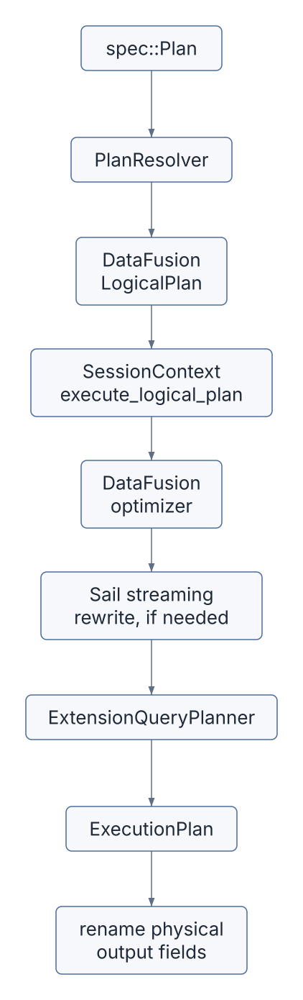
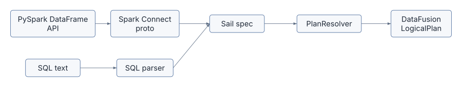
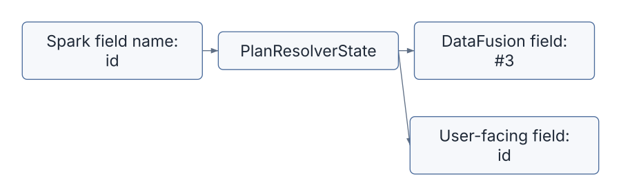
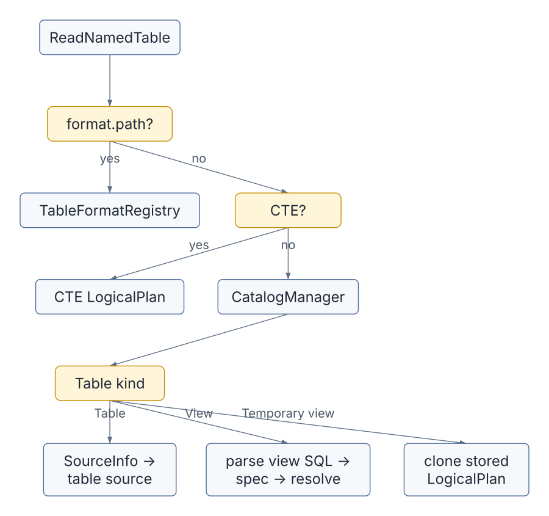
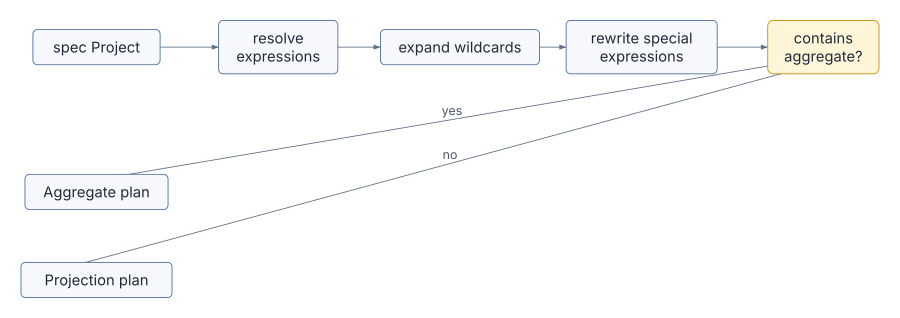
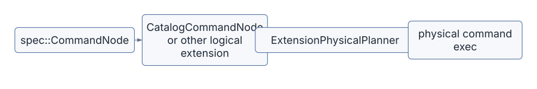
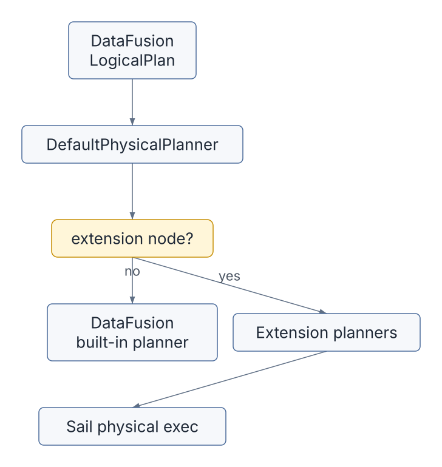
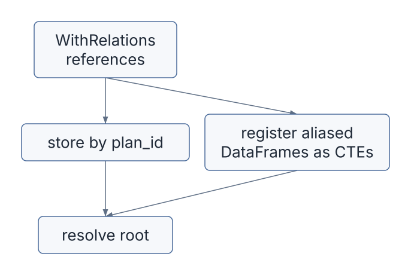
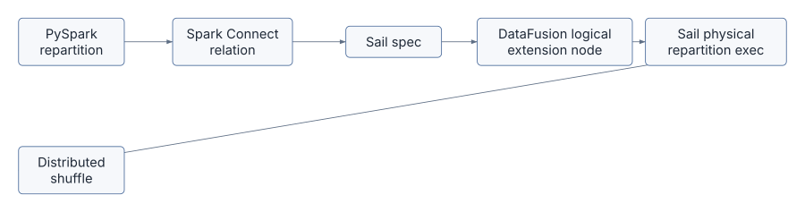

Spark Connect sends unresolved intent. DataFusion executes resolved logical and physical plans. Sail’s plan layer is the translation space between those two worlds.
This chapter is about that translation space.
In previous chapters, we followed query execution once DataFusion had a physical plan. Now we step earlier in the life of a query, into the code that decides what a Spark Connect relation, SQL statement, unresolved column, function call, catalog command, or UDF registration actually means inside Sail.
The central idea is simple but powerful:
Spark Connect proto or SQL
-> Sail spec
-> DataFusion LogicalPlan
-> DataFusion optimizer
-> Sail/DataFusion physical planning
-> distributed executionThe Sail spec is not DataFusion’s logical plan. It is also not exactly Spark Connect’s protobuf model. It is Sail’s own unresolved intermediate representation, designed to be easy to parse, serialize, inspect, and resolve.
That makes it one of the most important extension points in the whole architecture.
The main files for this chapter are:
| Concern | File |
|---|---|
| Plan execution entry point | crates/sail-plan/src/lib.rs |
| Resolver entry point | crates/sail-plan/src/resolver/plan.rs |
| Resolver state | crates/sail-plan/src/resolver/state.rs |
| Query resolver dispatch | crates/sail-plan/src/resolver/query/mod.rs |
| Expression resolver dispatch | crates/sail-plan/src/resolver/expression/mod.rs |
| Command resolver dispatch | crates/sail-plan/src/resolver/command/mod.rs |
| Attribute resolution | crates/sail-plan/src/resolver/expression/attribute.rs |
| Function resolution | crates/sail-plan/src/resolver/expression/function.rs |
| Table and data source reads | crates/sail-plan/src/resolver/query/read.rs |
| Repartition nodes | crates/sail-plan/src/resolver/query/repartition.rs |
| WithRelations support | crates/sail-plan/src/resolver/query/with_relations.rs |
| Sail spec plan model | crates/sail-common/src/spec/plan.rs |
| Sail spec expression model | crates/sail-common/src/spec/expression.rs |
| Sail spec data types | crates/sail-common/src/spec/data_type.rs |
| Spark Connect relation conversion | crates/sail-spark-connect/src/proto/plan.rs |
| Spark Connect expression conversion | crates/sail-spark-connect/src/proto/expression.rs |
| Spark Connect execution handler | crates/sail-spark-connect/src/service/plan_executor.rs |
| DataFusion extension physical planner | crates/sail-session/src/planner.rs |
Useful external references:
base.protorelations.protoexpressions.protoSpark’s own documentation describes Spark Connect as a client-server architecture where clients send unresolved logical plans over gRPC and receive Arrow-encoded batches back. Sail follows that same shape, but swaps Spark’s analyzer and engine for Sail’s resolver, DataFusion’s optimizer, and Sail’s distributed runtime.
The spec layer lives in sail_common::spec.
At first glance, it may look like a reimplementation of Spark Connect
relations and expressions. That is only partly true. The comment above
spec::Plan explains the design: the starting point is Spark
Connect’s Relation model, but Sail makes intentional
changes.
The spec layer:
That gives Sail a stable internal contract:
pub enum Plan {
Query(QueryPlan),
Command(CommandPlan),
}Both query and command plans carry optional plan_id
values:
pub struct QueryPlan {
pub node: QueryNode,
pub plan_id: Option<i64>,
}
pub struct CommandPlan {
pub node: CommandNode,
pub plan_id: Option<i64>,
}Those plan IDs matter because Spark Connect clients often reference subplans and attributes by ID. Sail preserves that identity through conversion and uses it during resolution.
The public planning entry point is
resolve_and_execute_plan() in
crates/sail-plan/src/lib.rs.
Despite the name, it does more than execute. It performs the whole plan path up to an executable physical plan:
pub async fn resolve_and_execute_plan(
ctx: &SessionContext,
config: Arc<PlanConfig>,
plan: spec::Plan,
) -> PlanResult<(Arc<dyn ExecutionPlan>, Vec<StringifiedPlan>)>The steps are:
PlanResolver.spec::Plan into a DataFusion
LogicalPlan.DataFrame from the logical
plan.In diagram form:

This is the same boundary we saw from the other side in earlier chapters:
Spark Connect requests arrive as generated protobuf Rust types in
crates/sail-spark-connect. The conversion layer turns those
types into Sail spec values.
The important conversion file is:
crates/sail-spark-connect/src/proto/plan.rsFor relations:
impl TryFrom<Relation> for spec::Plan
impl TryFrom<Relation> for spec::QueryPlan
impl TryFrom<Relation> for spec::CommandPlan
impl TryFrom<RelType> for RelationNodeThis conversion has to make a decision: is a Spark Connect relation a query node or a command node?
Sail uses an internal helper enum:
enum RelationNode {
Query(spec::QueryNode),
Command(spec::CommandNode),
}That matters because Spark Connect has several operation shapes. Some
produce relations; others execute side effects or return command
results. Sail normalizes them into spec::Plan::Query or
spec::Plan::Command.
For expressions, the conversion file is:
crates/sail-spark-connect/src/proto/expression.rsThere, Spark Connect expressions become spec::Expr:
impl TryFrom<Expression> for spec::ExprExamples:
| Spark Connect expression | Sail spec expression |
|---|---|
Literal |
spec::Expr::Literal |
UnresolvedAttribute |
spec::Expr::UnresolvedAttribute |
UnresolvedFunction |
spec::Expr::UnresolvedFunction |
ExpressionString |
parsed SQL expression, then Sail spec |
UnresolvedStar |
spec::Expr::UnresolvedStar |
Alias |
spec::Expr::Alias |
Cast |
spec::Expr::Cast |
Window |
spec::Expr::Window |
CommonInlineUserDefinedFunction |
spec::Expr::CommonInlineUserDefinedFunction |
SubqueryExpression |
spec::Expr::Subquery |
This is the first important lesson: Sail does not resolve columns or functions while converting protobuf messages. It only parses the client’s intent into Sail’s own unresolved representation.
That keeps Spark Connect compatibility code separate from analysis.
Spark Connect is not the only source of spec plans. SQL also enters the same model.
The conversion layer uses sail_sql_analyzer helpers such
as:
parse_one_statement
from_ast_statement
parse_expression
from_ast_expression
parse_object_name
from_ast_object_nameFor example, Spark Connect may send an ExpressionString.
Sail parses that expression string into an AST, then converts the AST
into spec::Expr.
The same pattern appears for SQL commands in
handle_execute_sql_command():
SQL string
-> Spark Connect relation shape
-> Sail spec plan
-> resolver
-> DataFusion logical planThis unification is important. It means that SQL and DataFrame APIs meet before DataFusion planning, not after.

For extension authors, this is a clue: if an extension is only available through SQL, it is not really integrated with the Spark Connect-style architecture. A good extension should be expressible in the spec layer or reachable through a spec-producing parser.
The resolver itself is tiny at the top:
pub struct PlanResolver<'a> {
ctx: &'a SessionContext,
config: Arc<PlanConfig>,
}It holds:
SessionContext,PlanConfig.The main entry point is resolve_named_plan() in
crates/sail-plan/src/resolver/plan.rs.
pub async fn resolve_named_plan(&self, plan: spec::Plan) -> PlanResult<NamedPlan>It returns a NamedPlan:
pub struct NamedPlan {
pub plan: LogicalPlan,
pub fields: Option<Vec<String>>,
}The fields value is subtle. Sail often gives internal
columns opaque field IDs during analysis to avoid name collisions. But
the user still expects Spark-like output names. For query plans,
resolve_named_plan() captures the user-facing field names
so the physical plan can later be renamed back.
Commands do not get output field renaming in the same way:
spec::Plan::Query -> LogicalPlan plus user-facing fields
spec::Plan::Command -> LogicalPlan with fields = NoneMost of the interesting resolver behavior is not in
PlanResolver itself. It is in
PlanResolverState.
The state tracks:
WithRelations subquery references,The most important field-resolution trick is this:
user name: "customer_id"
internal field ID: "#7"The DataFusion logical plan may carry #7, but Sail
remembers that the user-facing name is customer_id.
Why do this? Because DataFrame plans can easily contain duplicate column names:
SELECT left.id, right.id
FROM left
JOIN right ON left.id = right.idIf both columns were simply named id, subsequent
resolution would become ambiguous too early or in the wrong way. Sail
uses opaque internal names to keep the logical plan well-formed while
preserving Spark-facing names for display and final output.

The state also records hidden fields. Hidden fields are temporary columns needed for analysis or execution but not intended to appear in the final output. For example, a join or sort rewrite may need to carry a helper field through a subplan.
After resolving a query, resolve_query_plan() calls
remove_hidden_fields() so the public logical plan does not
expose those helper fields.
The query resolver dispatch lives in:
crates/sail-plan/src/resolver/query/mod.rsIt is an async recursive dispatcher over
spec::QueryNode.
The main structure is:
match plan.node {
QueryNode::Read { .. } => ...
QueryNode::Project { .. } => ...
QueryNode::Filter { .. } => ...
QueryNode::Join(join) => ...
QueryNode::Aggregate(aggregate) => ...
QueryNode::Repartition { .. } => ...
QueryNode::WithRelations { .. } => ...
...
}Each variant delegates to a focused resolver file:
| Query shape | Resolver file |
|---|---|
Read |
query/read.rs |
Project |
query/project.rs |
Filter |
query/filter.rs |
Join |
query/join.rs |
Aggregate |
query/aggregate.rs |
Sort |
query/sort.rs |
Limit |
query/limit.rs |
Repartition |
query/repartition.rs |
WithRelations |
query/with_relations.rs |
UDF and UDTF plan forms |
query/udf.rs, query/udtf.rs |
After each query node is resolved, the dispatcher does two things:
verify_query_plan(plan, state)
register_schema_with_plan_id(plan, plan_id, state)That means every resolved plan must use fields known to the resolver state. If a new resolver creates a field and forgets to register it, Sail fails with an internal resolver error.
That is a useful invariant. It catches bugs at the boundary where Spark-compatible names become DataFusion columns.
query/read.rs is a rich file because reading is where
catalogs, file formats, temporary views, CTEs, and dynamic table names
meet.
For a named table, Sail handles several cases:
<format>.<path> and
the format is registered, treat it as a direct data source read.CatalogManager for a table or
view.SourceInfo and ask
TableFormatRegistry to create a source.The rough flow:

This is where Sail’s session extensions begin to matter:
CatalogManager supplies table and view metadata.TableFormatRegistry turns format-specific metadata into
table sources.PlanService provides display and formatting helpers
elsewhere in resolution.Those are not global singletons. They are DataFusion session
extensions. That design lets Sail attach Spark-compatible services to a
normal DataFusion SessionContext.
Projection is deceptively complex. The Project node has
to handle ordinary expressions, wildcard expansion, aliases, generators,
windows, aggregate shortcuts, and Spark-specific functions like
spark_partition_id().
resolve_query_project() follows this pattern:
NamedExpr.Projection.The projection rewriters are especially instructive:
MonotonicIdRewriter
SparkPartitionIdRewriter
ExplodeRewriter
WindowRewriterThey transform expressions that cannot remain as plain scalar expressions into plan shapes that DataFusion can execute.

This pattern appears across Sail: the spec layer preserves Spark intent, then the resolver reshapes that intent into DataFusion-compatible logical plans.
Attributes are where users feel analysis quality most sharply.
The resolver handles:
The central method is:
resolve_expression_attribute(...)It tries candidates in a careful order:
HAVING.Nested-field resolution is Arrow-aware. For a struct field, Sail
builds a DataFusion get_field scalar function expression
rather than inventing a custom row accessor.
For example:
SELECT address.city FROM customersbecomes conceptually:
column(address)
-> get_field("city")Qualified matching supports forms like:
column
table.column
schema.table.column
catalog.schema.table.columnThe helper qualifier_matches() performs case-insensitive
comparison against DataFusion TableReference values.
This is one of the places where the resolver has to act more like Spark than vanilla DataFusion. The user’s unresolved expression is not just a name; it carries Spark resolution expectations.
Function resolution lives mainly in:
crates/sail-plan/src/resolver/expression/function.rs
crates/sail-plan/src/function/mod.rsThe function resolver follows a layered lookup:
The catalog lookup comes before built-ins because Spark Connect does not reliably mark all UDF calls in a way Sail can trust. The code even notes this:
is_user_defined_function is always false, so we need to check UDFs before built-in functions.For built-ins, Sail has registries:
BUILT_IN_SCALAR_FUNCTIONS
BUILT_IN_GENERATOR_FUNCTIONS
BUILT_IN_TABLE_FUNCTIONSFor aggregate functions, the resolver also handles clauses like:
DISTINCT,FILTER,ORDER BY,IGNORE NULLS.For PySpark UDFs, Sail carries enough information to later execute Python code:
pub(super) struct PythonUdf {
pub python_version: String,
pub eval_type: spec::PySparkUdfType,
pub command: Vec<u8>,
pub output_type: DataType,
}This is the same pattern we saw in the PySpark chapter: the Python function is not run in the resolver. It is represented as a plan expression that later physical execution can evaluate.
Commands enter through spec::CommandPlan and are
resolved in:
crates/sail-plan/src/resolver/command/mod.rsThe command resolver handles catalog operations, writes, streaming writes, explains, inserts, merge, deletes, variables, and view/table/database DDL.
Many catalog commands become DataFusion extension logical plans:
LogicalPlan::Extension(Extension {
node: Arc::new(CatalogCommandNode::try_new(self.ctx, command)?),
})Later, the physical planner recognizes
CatalogCommandNode and turns it into:
CatalogCommandExecThis is the key pattern for command execution:

This lets Sail preserve DataFusion’s plan pipeline even for operations that are not ordinary relational queries.
Sail uses DataFusion logical extension nodes for Spark-specific plan concepts that DataFusion does not natively model.
Examples include:
RangeNode,ShowStringNode,MapPartitionsNode,MonotonicIdNode,SparkPartitionIdNode,SortWithinPartitionsNode,SchemaPivotNode,FileWriteNode,FileDeleteNode,MergeIntoNode,ExplicitRepartitionNode,CatalogCommandNode,BarrierNode.These nodes are planned in
crates/sail-session/src/planner.rs by
ExtensionPhysicalPlanner.
That planner is installed through ExtensionQueryPlanner,
which builds a DataFusion DefaultPhysicalPlanner with
extension planners:
lakehouse extension planners
system table physical planner
Sail extension physical plannerThis is a crucial architectural point: Sail does not fork DataFusion’s planner. It uses DataFusion’s extension hooks.

For discussion #2001, this pattern is already half of the answer.
Third-party integrations need a disciplined way to register logical and
physical extension behavior without hard-coding every integration into
sail-session/src/planner.rs.
query/repartition.rs is a compact example that connects
this chapter to the shuffle chapters.
Spark-facing repartition intent becomes a Sail logical extension node:
ExplicitRepartitionNode::new(
Arc::new(input),
Some(num_partitions),
ExplicitRepartitionKind::RoundRobin,
vec![],
)For repartitionByExpression, Sail resolves the partition
expressions and creates:
ExplicitRepartitionKind::HashLater, ExtensionPhysicalPlanner turns
ExplicitRepartitionNode into
ExplicitRepartitionExec, using DataFusion physical
expressions and partitioning:
RoundRobin -> Partitioning::RoundRobinBatch
Hash -> Partitioning::Hash
Coalesce -> UnknownPartitioning with fewer partitionsThen Chapter 7’s job graph planner and Chapter 9’s shuffle operators take over.
This path is worth memorizing:
Spark repartition call
-> spec::QueryNode::Repartition
-> ExplicitRepartitionNode
-> ExplicitRepartitionExec
-> distributed stage boundary
-> ShuffleWriteExec / ShuffleReadExecThat is how a user-level API becomes data movement.
Spark Connect can send a root relation plus referenced relations. Sail models this as:
QueryNode::WithRelations { root, references }The resolver stores the references in PlanResolverState
by plan_id.
It also handles a useful PySpark pattern: SQL strings can refer to
DataFrames passed as arguments. The conversion may wrap those DataFrames
in SubqueryAlias nodes inside WithRelations.
Sail resolves those references and registers them as CTE-like table
names for the root query.
The flow is:

The scoping helpers in PlanResolverState make this
safe:
enter_with_relations_scope(),enter_cte_scope().Each helper restores the previous state on drop. This is a very
Rust-flavored design: scope cleanup is tied to ownership and
Drop, so temporary resolver state does not leak into the
outer query.
The Spark Connect plan executor in:
crates/sail-spark-connect/src/service/plan_executor.rsuses different modes for different operations.
Normal relations are lazy:
handle_execute_relation
-> relation.try_into()
-> handle_execute_plan(..., Lazy)Commands such as UDF registration and writes are eager and silent:
handle_execute_register_function
handle_execute_write_operation
handle_execute_create_dataframe_view
handle_execute_write_operation_v2They build a spec::Plan::Command, resolve it, execute
it, drain the stream, and return completion metadata rather than a
normal relation stream.
SQL command handling has one extra twist. If a SQL string resolves to a command, Sail executes the command and returns a local relation containing the command result. That matches Spark Connect’s expectation that a SQL command can return an opaque relation for the client to use.
Consider a PySpark call:
df = spark.table("orders").where("amount > 100").select("customer_id", "amount")Spark Connect sends an unresolved relation tree roughly like:
Project(customer_id, amount)
Filter(amount > 100)
Read(NamedTable orders)Sail first converts that into spec:
spec::QueryNode::Project
spec::QueryNode::Filter
spec::QueryNode::ReadThen the resolver walks bottom-up:
ReadNamedTable asks the catalog for
orders.Filter resolves amount against the input
schema.Project resolves customer_id and
amount.The interesting part is the field mapping:
customer_id -> #0
amount -> #1DataFusion sees stable internal columns. The Spark client eventually sees the expected names.
Now consider:
df.repartition(16, "customer_id")At the spec level:
QueryNode::RepartitionByExpression {
partition_expressions: [UnresolvedAttribute(customer_id)],
num_partitions: Some(16),
}The resolver:
customer_id into a DataFusion column
expression.ExplicitRepartitionNode with
ExplicitRepartitionKind::Hash.The physical planner:
Partitioning::Hash(expressions, 16).ExplicitRepartitionExec.The distributed planner:
One user-level method call has passed through four layers:

A registered Python UDF follows a different path.
First, Spark Connect sends a register-function command. Sail builds:
spec::Plan::Command(
spec::CommandNode::RegisterFunction(...)
)The command resolver stores the function in the catalog.
Later, a query calls the function:
spark.sql("SELECT my_udf(x) FROM t")The expression resolver sees:
spec::Expr::UnresolvedFunction("my_udf", [x])It checks the catalog before built-ins, finds the PySpark unresolved UDF, resolves the argument expressions, and builds a Python UDF expression that can be planned and executed later.
The UDF command bytes stay as bytes. The resolver does not deserialize Python logic or execute Python code. It only creates a typed plan representation.
That distinction is vital for distributed execution. Workers need a serializable plan and enough metadata to run the UDF in the right execution context.
Discussion #2001 asks for an extension API for third-party DataFusion integrations:
pysail-sedona.This chapter reveals why the extension story cannot be only a function registry.
Extensions may need to participate in several phases:
| Phase | Why extensions need it |
|---|---|
| Spark Connect conversion | To accept custom relation, expression, or command messages. |
| Sail spec | To represent extension intent in a language-neutral, serializable form. |
| SQL analysis | To parse extension SQL syntax or functions. |
| Logical resolution | To bind names, tables, functions, and types. |
| Logical optimization | To rewrite extension plans before physical planning. |
| Physical planning | To turn extension logical nodes into execution plans. |
| Plan encoding | To send physical expressions or nodes to workers. |
| Worker registration | To ensure workers can execute extension functions and operators. |
The current architecture has useful internal patterns, but most of them are wired into Sail itself:
ExtensionPhysicalPlanner has hard-coded downcasts,A mature extension design would turn those internal patterns into explicit contracts.
One possible architecture is a staged extension trait family rather than one giant trait.
For example:
pub trait SailPlanExtension: Send + Sync {
fn name(&self) -> &'static str;
fn register_functions(&self, registry: &mut FunctionRegistry) -> PlanResult<()>;
fn register_table_functions(&self, registry: &mut TableFunctionRegistry) -> PlanResult<()>;
fn logical_resolvers(&self) -> Vec<Arc<dyn ExtensionLogicalResolver>>;
fn logical_optimizer_rules(&self) -> Vec<Arc<dyn LogicalRewriter>>;
fn physical_planners(&self) -> Vec<Arc<dyn ExtensionPlanner + Send + Sync>>;
fn codecs(&self) -> Vec<Arc<dyn ExtensionCodec>>;
}The goal would be to let an extension say:
I know how to parse or receive this intent.
I know how to resolve it into a logical node.
I know how to optimize it.
I know how to plan it physically.
I know how to encode it for workers.For Spark Connect specifically, extensions also need a protocol
story. Spark Connect’s own extension guidance defines
Relation.extension, Command.extension, and
Expression.extension, each typed as
google.protobuf.Any. Sail’s spec layer can mirror that by
introducing a type_url-indexed dispatcher in the
resolver:
Connect Relation/Expression/Command .extension
-> SparkConnectExtensionDispatcher::dispatch(type_url, payload)
-> extension handler resolves payload
-> either:
spec::QueryNode built from existing operators (pattern A, plan-time only),
or:
spec::QueryNode::Extension { ... } for a logical extension node (pattern B)
-> normal Sail planning and DataFusion executionPattern A extensions never need an execution-time integration. Pattern B extensions hand off to a logical extension node and the rest of the chapter 13 extension stack. This makes the resolver the dispatch point for what chapter 13 calls the plan-time extension boundary: a stable, protobuf-versioned, language-neutral channel that is independent of the Rust/DataFusion-FFI work needed for custom physical operators. Chapter 13 develops the full dispatcher design.
The resolver code suggests several design rules.
First, preserve unresolved intent until enough context exists. The protobuf conversion layer should parse and normalize, but not bind names too early.
Second, keep Spark-facing names separate from engine-facing names. Any extension that creates fields should register them through resolver state or an equivalent API.
Third, distinguish query nodes from command nodes. Side-effecting extensions should not pretend to be ordinary projections.
Fourth, make worker compatibility explicit. If an extension creates physical operators, workers must have the same extension and codec registrations.
Fifth, use DataFusion extension hooks where possible. Sail’s strength is that it extends DataFusion rather than replacing it.
Sixth, expose ordering and collision rules. Function names, optimizer rules, and physical planners all need deterministic registration behavior.
Trace a simple query:
SELECT customer_id, count(*)
FROM orders
GROUP BY customer_idSuggested path:
crates/sail-spark-connect/src/proto/plan.rs if
the query arrives through Spark Connect, or in the SQL analyzer path if
it starts as SQL.spec::QueryNode and
spec::Expr values.crates/sail-plan/src/resolver/plan.rs.resolve_named_plan() into
resolve_query_plan().query/read.rs, follow table resolution for
orders.expression/attribute.rs, follow
customer_id.expression/function.rs, follow
count.query/aggregate.rs, follow group-by planning.resolve_and_execute_plan() and see how
DataFusion optimization begins.The core question is:
At this line, are we still describing user intent, or have we bound that intent to a
DataFusion plan object?Once you can answer that, the resolver stops feeling like a forest and starts feeling like a set of well-marked trails.
The Sail spec and resolver form the semantic center of the engine:
PlanResolver turns spec plans into DataFusion logical
plans.PlanResolverState tracks internal field IDs,
user-facing names, hidden fields, plan IDs, CTEs, subqueries, and
temporary scopes.The next chapter turns from plans to callable behavior: functions, UDFs, UDAFs, UDTFs, codecs, and why distributed execution makes serialization and worker-side registration non-negotiable.